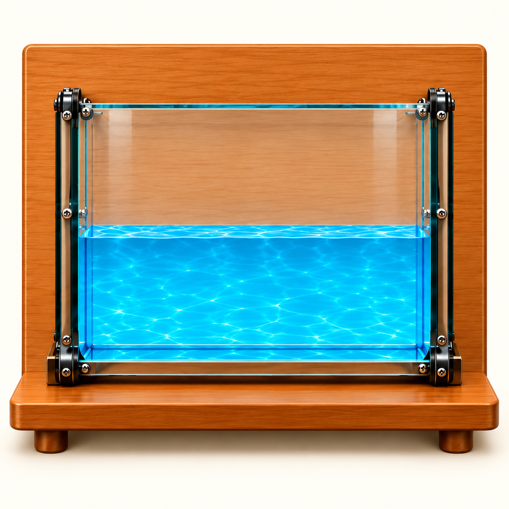

從光速與折射，解開水底硬幣的位置
光在不同介質中一樣快嗎？
介質與光速：同時出發，比較傳播快慢
空氣、水和玻璃都透明，光也跑得一樣快嗎？
讓三道光同時出發，走一樣長的路，看看誰先到。
↔ 左右滑動，查看完整實驗桌。
正在準備實驗桌……
依代表光速與設定路程計時，未放慢播放。空氣中光速取約每秒 30 萬公里；水與常見透明玻璃使用代表模型。圖中尺寸、光點與光跡為示意，假設整段均為同一介質，忽略光的衰減。
光變慢了，為什麼沒有轉彎？
加入空氣對照，觀察速度與方向
光路沒有轉彎，可是怎麼看出光變慢了？
讓一束光全程走在空氣中，同時發射、同時比較。
- 1發射光束
- 2跨越介面
- 3比較同一瞬間
光源 → 終點水／玻璃組：空氣 75 萬公里 ＋ 介質 75 萬公里
↔ 左右滑動，對照空氣、水與玻璃的光路。
正在準備實驗桌……
觀察結果：光進入水或玻璃後變慢，方向仍保持筆直。
為什麼變慢，卻沒有轉向？
兩輪並排，朝交界直直前進。
兩輪同時進入較慢的區域，一起變慢，仍直直前進。
垂直入射時，波前各處同時進入另一種介質，方向保持不變。
小車為類比，不代表光受到摩擦。
法線是垂直介面的參考線；本次光沿法線入射，因此法線與光路重合。
模型說明：代表光速：空氣約 30 萬、水約 22.5 萬、玻璃約 20 萬公里／秒。依設定路程計時，未放慢播放；器材與光跡非實際比例，假設介質均勻、忽略衰減。
光斜著進入，會往哪裡偏？
直接在光路上，看懂方向與角度的變化
光斜著進入水時，是在哪裡轉向的？
調整入射角，再點燈發射。角度與轉向說明會直接出現在光路上。
偏向法線
光速由快變慢
折射角<入射角
折射角變小，光線更靠近法線。
角度皆從法線量起原方向延長線（比較參考）
正在準備實驗場景……
為什麼斜著進入，就會轉向？
斜著前進，兩輪速度相同。
一側先進入、先變慢，小車便轉向；兩輪都進入後，沿新方向前進。
斜著進入時，波前各處先後進入另一種介質，行進速度改變的時間不同，因此傳播方向改變。
光由較快的空氣進入較慢的水或玻璃，光路偏向法線，折射角變小。沿法線入射（0°）時，各處同時變慢，方向不偏折。
小車為類比，不代表光受到摩擦。光路與角度由代表模型計算，水與玻璃的代表折射率分別為4/3與1.5；不要求計算公式。器材及光跡非實際比例，穿越動畫採共同慢動作、非實際秒數，省略介面的部分反射。
光由水或玻璃射回空氣，方向又會怎樣？
由慢進入快：直接比較偏離法線與角度變大
那從水裡往空氣照，還會靠近法線嗎？
把水或玻璃放在上方、空氣放在下方。光仍由上往下照，看看從較慢介質進入較快介質時，方向怎麼變。
偏離法線
光速由慢變快
折射角>入射角
折射角變大，光線更遠離法線。
角度皆從法線量起原方向延長線（比較參考）
正在準備實驗場景……
為什麼從水或玻璃射回空氣，會偏離法線？
斜著前進，兩輪速度相同。
一側先進入、先加速，小車便轉向；兩輪都進入後，沿新方向前進。
斜著進入時，波前各處先後進入另一種介質，一側先加速，另一側還比較慢，因此傳播方向偏離法線。
光由上方較慢的水進入下方較快的空氣，光路偏離法線，折射角變大。沿法線入射（0°）時，各處同時加速，方向不偏折。
小車為類比，不代表光受到摩擦。光路與角度由代表模型計算，水與玻璃的代表折射率分別為4/3與1.5；不要求計算公式。器材及光跡非實際比例，穿越動畫採共同慢動作、非實際秒數，省略介面的部分反射。
折射光路能倒著走嗎？
光路可逆：交換起點與終點，觀察原路返回
把光的前進方向倒過來，還能沿原路走嗎？
分別開啟 A、B，再一起開啟，看看兩個方向的光路是否重合。

正在準備實驗場景……
水／玻璃側角度 30°，空氣側角度 41.8°。光路反向時，兩個角的角色怎麼交換？
光沿原光路反向射入，會沿原路返回。原本的折射角會成為反向的入射角，原本的入射角會成為反向的折射角；兩個角通常不相等。只開一支光源時標示入射角與折射角；兩支同時開啟時改以空氣側及水／玻璃側命名。角度皆從法線量起。
拖曳 A 或 B 時，另一端會自動對準對應光路。分別開燈，再同時開啟，比較路徑與箭頭；兩種光色只用來區分方向，不比較色散。
對照反射：兩種光路都能沿原路返回
反射光路
折射光路
灰色底線保留原來的路徑；藍色箭頭顯示目前前進方向。A、B 是固定位置，反向時起點與終點交換。
觀察重點 反射與折射的光路都可逆：沿原來的光路反向入射，就會沿原路返回。
水底的物體看起來在哪裡？
視深：分清楚實際位置與看起來的位置
水裡的硬幣，怎麼看起來比較靠近水面？
硬幣留在原處。把光路和從這裡看見的畫面放在一起，比較水面下的位置。
左邊看光怎麼走，右邊看從這個位置會看見什麼。硬幣固定，兩個視角同步。
硬幣沒有移動，改變的是光進入眼睛的方向。出水折射 → 沿入眼方向判斷 → 水中硬幣看起來較淺。
為什麼看到的位置與實際位置不同？
硬幣反射的光從水進入空氣，斜射時偏離法線。眼睛依入眼光線的方向往回判斷，得到比硬幣更靠近水面的視位置。左邊的橘色虛線只用來說明這個判斷，光並沒有沿虛線傳播。
右邊是左側觀看位置的視野。觀看位置太遠、水位較低時，前側槽壁可能遮住硬幣的光；靠近或加水，便能觀察可見範圍如何改變。即使暫時看不到硬幣，它仍固定在槽底。
生活中，池底或水中物體也常看起來較淺；看見的深度不能直接當作實際水深。
模型：平坦水面、代表水折射率4/3，小瞳孔附近的光估計局部視位置。右側以相同場景的光線追跡繪製，從槽口觀看，前側槽壁設為不透光以呈現遮擋；未模擬透過槽壁的另一組折射、波浪與部分反射。光路重播是慢動作示意。
單元小測
用光路解釋水中物體的位置
整理折射方向、垂直入射與視深的觀察，完成三個問題。
我能用光路來解釋剛才的現象了嗎？
用三個問題整理觀察；需要時也可以回到前面的實驗。
接下來，透鏡也會利用折射改變光路，讓我們看見不同的像。